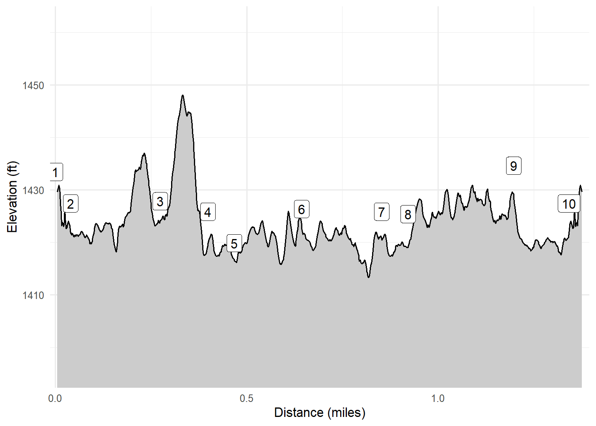

City Bridges Walk
Lucerne, Switzerland
Soon after getting to Lucerne on October 11, 2024, we headed out to explore the city along the river near our hotel. We walked along the Reuss River, crossing the river first (and ultimately twice) at the beautiful wooden Spreurbrucke, then at the modern Geissmattbrucke, and finally at the iconic Kapelbrucke (aka Chapel Bridge). The Kapelbrucke is thought to be the oldest wooden bridge in Switzerland and is magnificent with its old wood, paintings, and flowers. I included a few pictures of Kapelbrucke at night, where it is even more beautiful.
Walk-Specific Map
Elevation Profile

Images

LBRDGS02: Kapelbrucke

LBRDGS02: Kapelbrucke

LBRDGS02: Kapelbrucke

LBRDGS04: Kim at Spreurbrucke

LBRDGS04: Shrine on Spreurbrucke

LBRDGS05: Reuss River

LBRDGS05: Watchtower

LBRDGS07: Hotel Mr. Pickwick

LBRDGS08: Kim & I on Kapelbrucke

LBRDGS08: Kapelbrucke
GPX Download
A sanitized GPX file of our hike is here.
Summary Information
| NUM | trackID | Primary | Description | Distance | CumDist | DeltaElev |
|---|---|---|---|---|---|---|
| 1 | LBRDGS01 | Lucerne City Bridges Walk | Hotel Mr. Pickwick to Rathausquai | 0.04 | 0.04 | -6 |
| 2 | LBRDGS02 | Lucerne City Bridges Walk | Kapellbrucke [North] to Josi-J-Meier Platz | 0.23 | 0.27 | 0 |
| 3 | LBRDGS03 | Lucerne City Bridges Walk | Josi-J-Meier Platz to Spreuerubrucke [East] | 0.12 | 0.40 | -2 |
| 4 | LBRDGS04 | Lucerne City Bridges Walk | Spreuerubrucke [East] to Spreuerubrucke [West] | 0.07 | 0.47 | -6 |
| 5 | LBRDGS05 | Lucerne City Bridges Walk | Spreuerubrucke [West] to Geissmattbrucke | 0.18 | 0.64 | 6 |
| 6 | LBRDGS06 | Lucerne City Bridges Walk | Geissmattbrucke to Spreuerubrucke [East] | 0.21 | 0.85 | 1 |
| 7 | LBRDGS04 | Lucerne City Bridges Walk | Spreuerubrucke [East] to Spreuerubrucke [West] | 0.07 | 0.92 | -6 |
| 8 | LBRDGS07 | Lucerne City Bridges Walk | Spreuerubrucke [West] to Kapellbrucke [South] | 0.28 | 1.20 | 9 |
| 9 | LBRDGS08 | Lucerne City Bridges Walk | Kapellbrucke [South] to Kapellbrucke [North] | 0.14 | 1.34 | -9 |
| 10 | LBRDGS01 | Lucerne City Bridges Walk | Rathausquai to Hotel Mr. Pickwick | 0.04 | 1.38 | 6 |